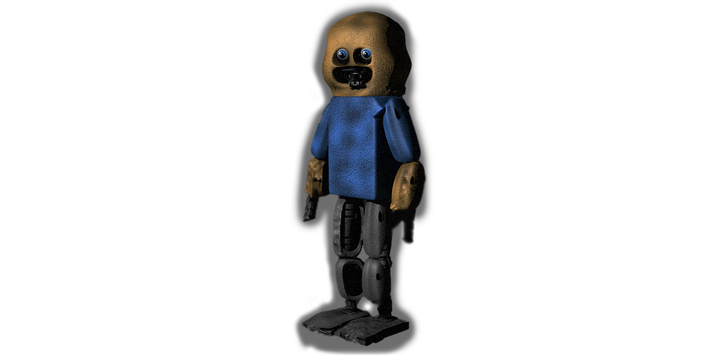
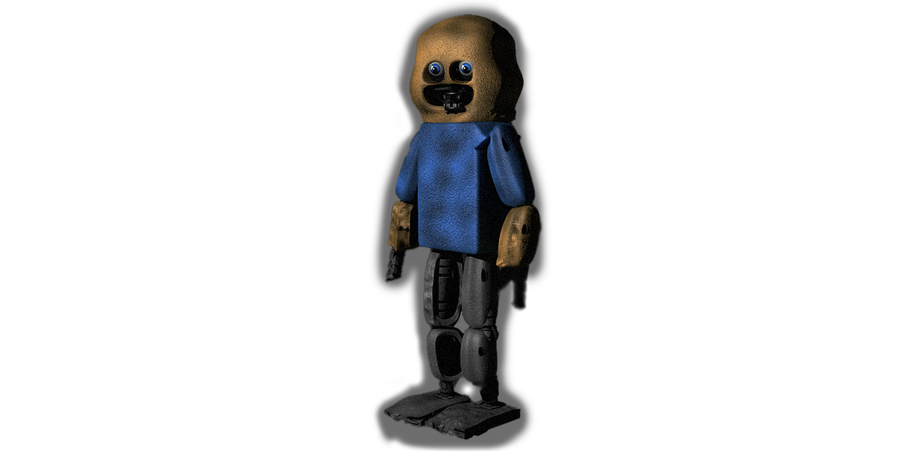

Vikie´s pizzeria
Vikie´s Pizzeria je malá horrorová hra, vydaná v roce 2022, od vývojáře Viktora Šimůnka. Hrajete za osobu
, která potřebuje peníze, a tak vezme práci v místní pizzerii, o které se říká že je prokletá. Úkolem hráče je přežít 3 noční směny. Animatroniční maskoti půjdou postupně po vás a hráč má různé možnosti, jak se bránit. Vše napájí pouze omezené množství elektřiny, takže musíte přemýšlet, jak s ní naložíte. Design a modeling byl vytvářen v programu Cinema4D, kde byly vymodelovány objekty a prostředí. Finální model pizzerie byl vyrendrován a vložen do programu Clickteam fusion 2.5. Tam byl poté kód napsán. Soundtrack ke hře složil Viktor v programu FL studio 12.
Odkaz na hru
Hodně štěstí…